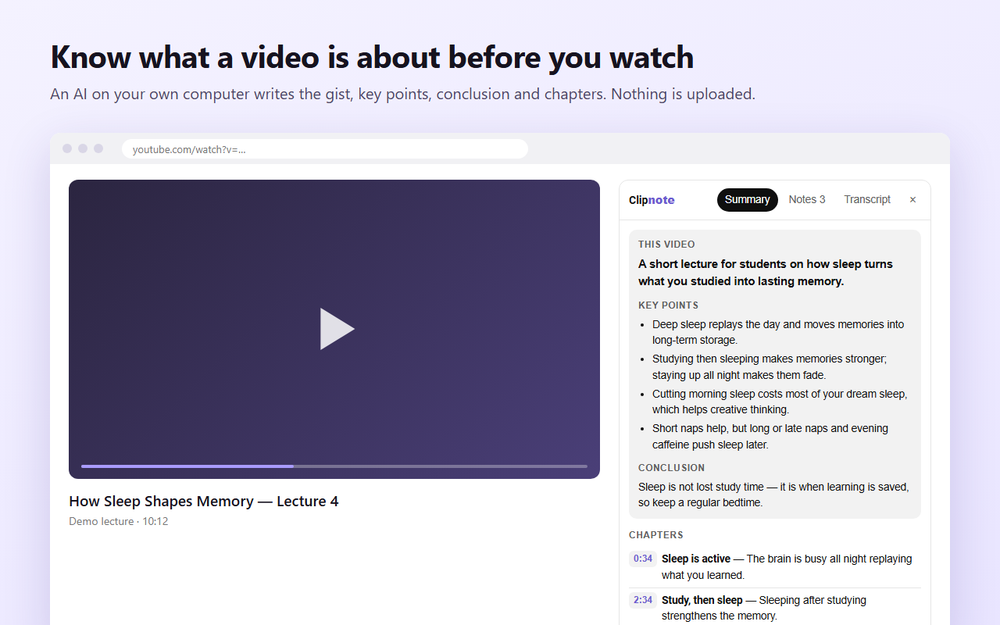

Clipnote
Your videos and notes never leave your computer. Clipnote summarizes and transcribes videos with an AI that runs only on your own PC — no uploads, no servers, no account. Key points with clickable times, chapters, notes and transcription for videos without captions. Free.
Add to Chrome — it’s free
Private by design
- Runs on your graphics card — captions, audio, summaries and notes are processed and stored only on this computer.
- Nothing is sent — not to us, not to any AI company. There is no Clipnote server to send it to.
- Check it yourself — offline mode blocks every outside request after the one-time model download, and the panel shows the engine’s network count: 0.
- For places where cloud AI is not allowed — work PCs, confidential meetings, private recordings, paid courses.
What it does
- AI summary — what the video is about, the key points with clickable times, and chapters. Written by the open Qwen3 model running on your graphics card, and every key point is checked against the captions so it does not make things up.
- Notes — write a note at any moment; each note keeps its timestamp. Copy or download as Markdown.
- Library — every video you summarized is kept on your PC with its transcript, summary and notes. Search them all at once and jump to the exact moment.
- Ask the video — type a question and get a short answer with the [m:ss] moment where it is said.
- Transcript — search everything that was said; the current line is highlighted as you watch.
- Listen & transcribe — for videos without captions, Clipnote listens while you watch and writes down what is said, using a speech model that runs on your computer.
- Any site — on YouTube the panel appears by itself; on other sites, click the Clipnote button in the toolbar.
- Auto language — detects the spoken language by itself and listens only to the video you chose, not other tabs.
- Video files on your PC — open meeting or lecture recordings (mp4, webm, mov…) and subtitle files; nothing is uploaded.
- Offline mode — after the one-time model download, block every outside request. The panel shows the engine’s network count: 0 sent anywhere else.
Clipnote Pro — $19 once
Everything above stays free. Pro adds library tools for people who keep many notes: save your whole library to a folder as Markdown (for example an Obsidian vault), back it up and restore it. One payment, no subscription. See Clipnote Pro